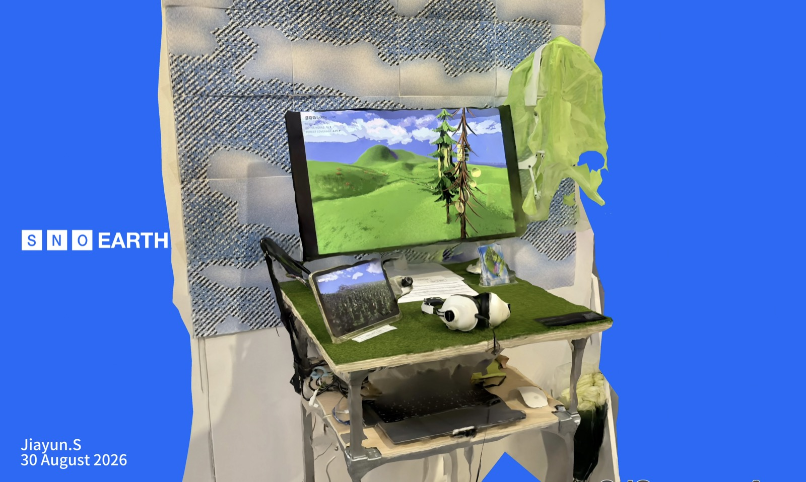

Second Nature Observatory
An interactive multi-screen installation built with physical computing and mixed media.
Second Nature Observatory begins with the "bionic cell towers" scattered across our cities — signal masts disguised as pines and palms. They look like nature, yet they are machines processing vast amounts of data every second.
The work follows a single chain: our endless demand for network speed forces base stations to proliferate; and precisely because they multiply so densely, so visibly, they must disguise themselves as trees, turning their encroachment on space into a tranquil "nature."
The installation comprises a promotional-style documentary, a real-time digital forest, and a mechanical branch that reaches out of the screen into the room. Turning a knob to see the film more clearly, the visitor unknowingly drives the forest to surge and the machinery to convulse — their most ordinary desire made visible as its hidden cost.
The work makes no judgment and asks for no change. These demands cannot be erased; none of us can step outside them. It simply makes this invisible condition tangible, inviting us to stand before it for a while.
纪录影像 · 装置核心的宣传片式影片

装置现场 · 多屏、数字森林与机械树枝